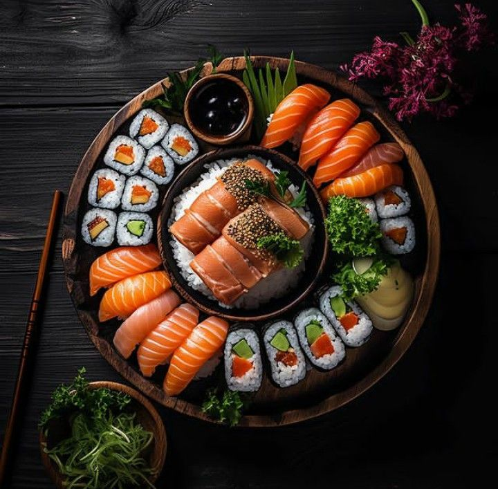
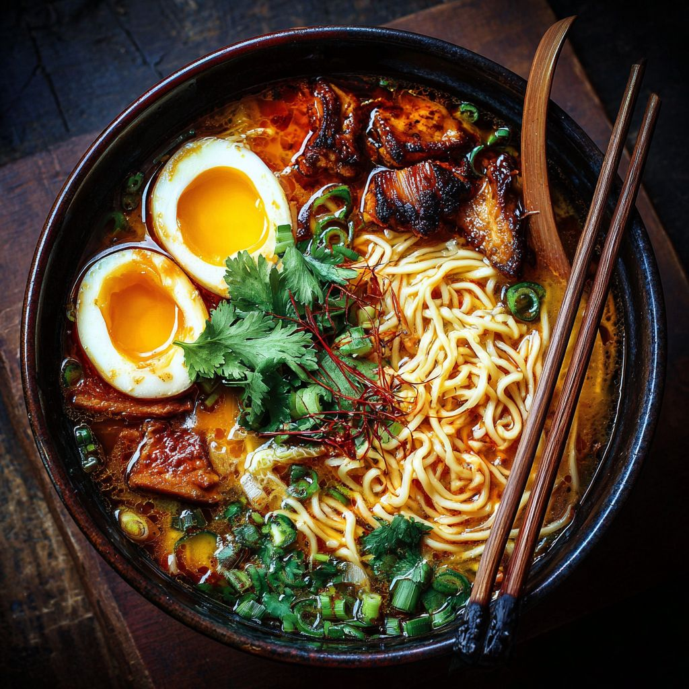
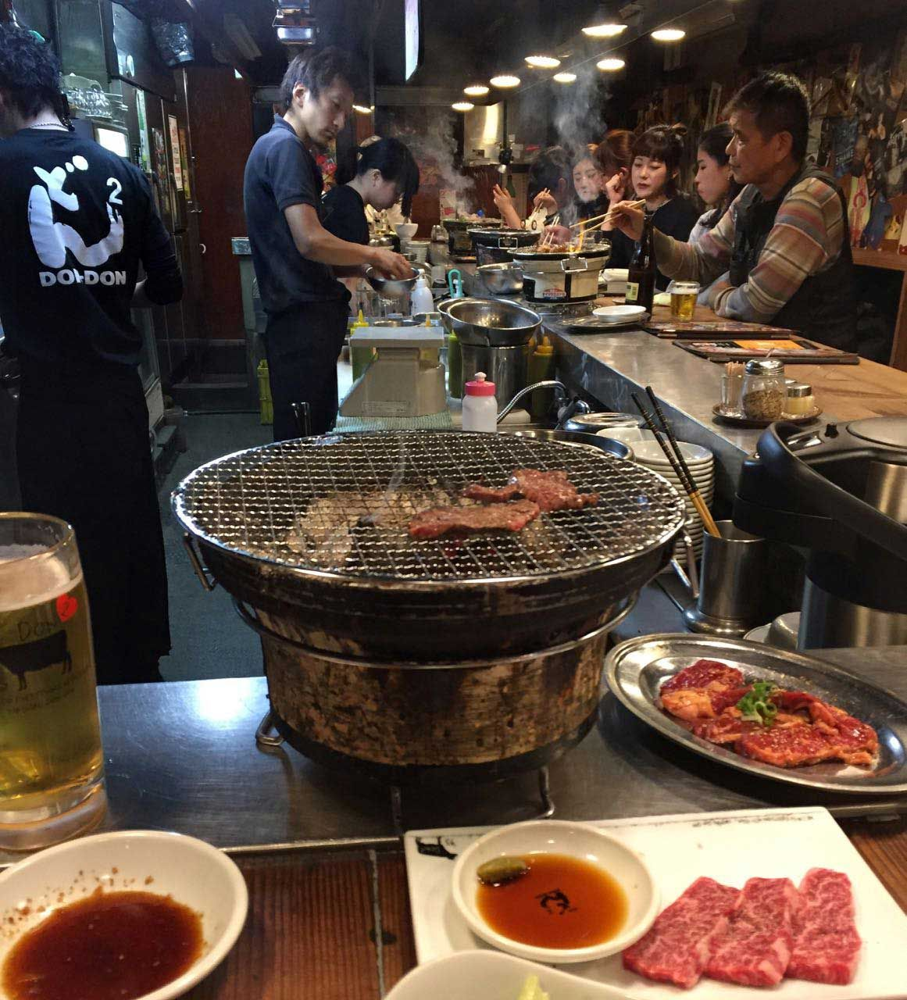

Melhores Restaurantes e Bares da Liberdade - São Paulo

1
Sushi Yassu
Restaurante Japonês
★★★★★ (4.9)
Sushi e sashimi fresquíssimos.

2
Hachiko Ramen
Restaurante Japonês
★★★★☆ (4.8)
Ramen autêntico com caldo rico.

3
Izakaya Tanuki
Bar Japonês
★★★★☆ (4.7)
Petiscos e saquê premium.